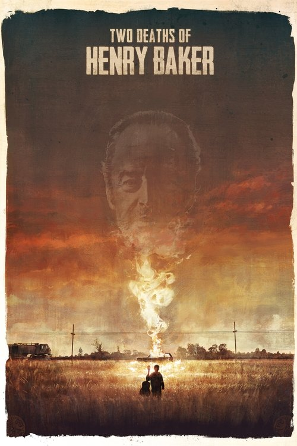

Two Deaths of Henry Baker (2020)
الوصف: When the famous outlaw Henry Baker is released from prison after 25 years, old friends and enemies are waiting for him. The son he left behind, entrusted to watch over his ill-gotten riches. A bearded vagrant with a pistol and a decades-old bullet scar in his stomach. An alcohol soaked deputy with half an ear on one side. And a burned out street hustler with a sick mother and a festering vendetta. They trail Henry to a dilapidated hotel where he plans to reunite with his son and the secret bag of gold he left behind.
الممثلون
- Gil Bellows (Henry Baker / Sam Bird)
- Tony Curran (Sheriff Ron Capman)
- Sebastian Pigott (Hank)
- Jess Salgueiro (Marienne)
- Joe Dinicol (Sam Bird Jr.)
- Dani Kind (Lucille)
- Corteon Moore (Brumby)
- Sergio Di Zio (Lieutenant Eldridge)
- Nigel Shawn Williams (Carlos)
- Michael Swatton (Anson Baker)
المخرج: Felipe Mucci
المنتج: غير متوفر